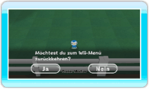
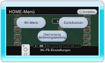

● Über das Hauptmenü
Du kannst die Software beenden, indem du auf Wii-MENÜ zeigst (siehe Abschnitt „11. Hauptmenü“) und  drückst. Nach einem kurzen Gespräch mit Eukalia wird automatisch gespeichert und du gelangst zurück zum Wii-Menü.
drückst. Nach einem kurzen Gespräch mit Eukalia wird automatisch gespeichert und du gelangst zurück zum Wii-Menü.

● Über das HOME-Menü
Wenn du  drückst, wird das HOME-Menü angezeigt. Zeige auf Wii-MENÜ und drücke . Die Software speichert automatisch. Wenn du die Software auf diese Weise beendest, überspringst du das Gespräch mit Eukalia.
drückst, wird das HOME-Menü angezeigt. Zeige auf Wii-MENÜ und drücke . Die Software speichert automatisch. Wenn du die Software auf diese Weise beendest, überspringst du das Gespräch mit Eukalia.